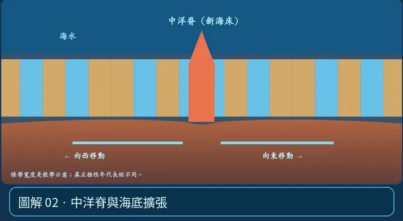

第 04 單元｜圖解 2/6｜課本 p.77–80
中洋脊與海底擴張
張裂邊界的新岩漿上升，凝固成新的海洋地殼，將舊海床往兩側帶走。中洋脊附近較年輕，遠離中洋脊通常較老。
① 看一眼② 操作圖③ 自己推理④ 揭開解答
🔬 這張圖，請自己動手試
操作圖上方的頁籤、滑桿或按鈕；圖片也能左右滑動放大觀看。
互動圖解 · 中洋脊與海底擴張

原創 SVG 地科教學模型，方便理解，非真實比例、非即時地震資料；互動無法載入時仍有靜態圖。
STEP 01 · 先觀察
👀 眼睛先找線索
切到磁條帶頁，先看中洋脊中央新形成的海底，再往左右追蹤已生成的岩層。
💡 為什麼是這樣？
中洋脊附近板塊張裂、地函物質上升，玄武質岩漿凝固形成新海洋地殼；舊海底逐漸離開脊軸。
🎯 換個問法想一題
同一洋盆中洋脊附近通常比較老，還是比較年輕？
我想好了，點開看答案 ↓
通常比較年輕，越遠離擴張中心的海床越老。
⚡ 一句記住：海底其實一直在更新